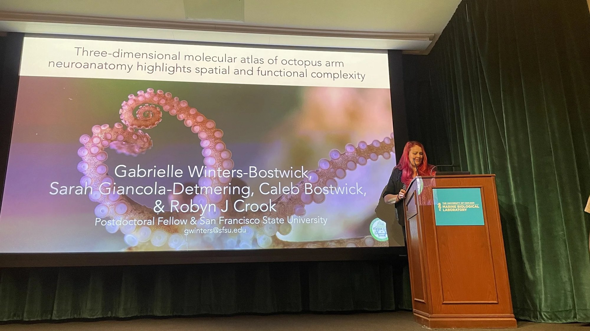

Publications
Seven peer-reviewed papers and preprints, three as first author. Students I mentored are co-authors on two of them.

§ 1
Papers and preprints
- Neurochemical control of decentralized octopus arm circuitry.In pressWinters-Bostwick GC, Bostwick CJ, Crook RJ.iScience, accepted 2026. Preprint: bioRxiv, 2025. doi:10.1101/2025.11.29.691307
- Molecular and ultrastructural characterization of the intramuscular nerve cords of the octopus arm.In revisionBenedict J, Engelman M, Klos M, Crook RJ, Winters-Bostwick GC.bioRxiv, June 2026. In revision, Journal of Comparative Neurology. doi:10.64898/2026.06.06.730610
- Three-dimensional molecular atlas highlights spatial and neurochemical complexity in the axial nerve cord of octopus arms.Winters-Bostwick GC, Giancola-Detmering SE, Bostwick CJ, Crook RJ.Current Biology 34(20): 4756–4766, 2024. doi:10.1016/j.cub.2024.08.049
- Evaluation of candidates for systemic analgesia and general anesthesia in the emerging model cephalopod, Euprymna berryi.Deutsch S, Parsons R, et al., Winters-Bostwick G, Crook RJ.Biology (Basel) 12(2): 201, 2023. doi:10.3390/biology12020201
- Neurotransmission and neuromodulation systems in the learning and memory network of Octopus vulgaris.Stern-Mentch N, Winters Bostwick G, Belenky M, Moroz L, Hochner B.Journal of Morphology 283(5): 557–584, 2022. doi:10.1002/jmor.21459
- Mapping of neuropeptide Y expression in Octopus brains.Winters GC, Polese G, Di Cosmo A, Moroz LL.Journal of Morphology 281(7): 790–801, 2020. doi:10.1002/jmor.21141
- Molecular evidence for convergence and parallelism in evolution of complex brains of cephalopod molluscs.Yoshida MA, et al., Winters GC, Kohn AB, Moroz LL.Integrative and Comparative Biology 55(6): 1070–1083, 2015. doi:10.1093/icb/icv049
Doctoral dissertation: Molecular Mapping of the Octopus Brain. University of Florida, 2018.
§ 2
Selected presentations
- Feb 2026Molecular and functional mapping of the octopus arm nervous system.
Invited speaker, CephNeuro Conference, Galveston, TX. - Apr 2024Three-dimensional molecular atlas of octopus arm neuroanatomy.
Oral presentation, CephNeuro Conference, Woods Hole, MA. - Jan 2018Cephalopod transcriptomes unravel details of complex nervous system evolution.
Oral presentation, SICB Annual Meeting, San Francisco, CA. - Oct 2015Cephalopod neurogenomics: insights into the evolution of complex brains.
Invited speaker, TONMOCON VI, Sarasota, FL. - Apr 2014Cephalopod transcriptomes unravel details about centralized brain evolution.
Invited speaker, Monterey Bay Aquarium.
§ 3
Grants, fellowships, and awards
- 2026Kavli Science and Society Sparks Program, The Kavli Foundation
- 2026Kavli-Grass Fellowship, Marine Biological Laboratory: independent research fellowship
- 2011–15Alumni Fellowship, University of Florida
- 2011–14Grinter Fellowship, University of Florida
- 2014, 2015Poster awards, Florida Genetics Meeting (Honorable Mention; Third Place)
- 2015NSF REU Poster Presentation Award, to mentee Rayanna Laux